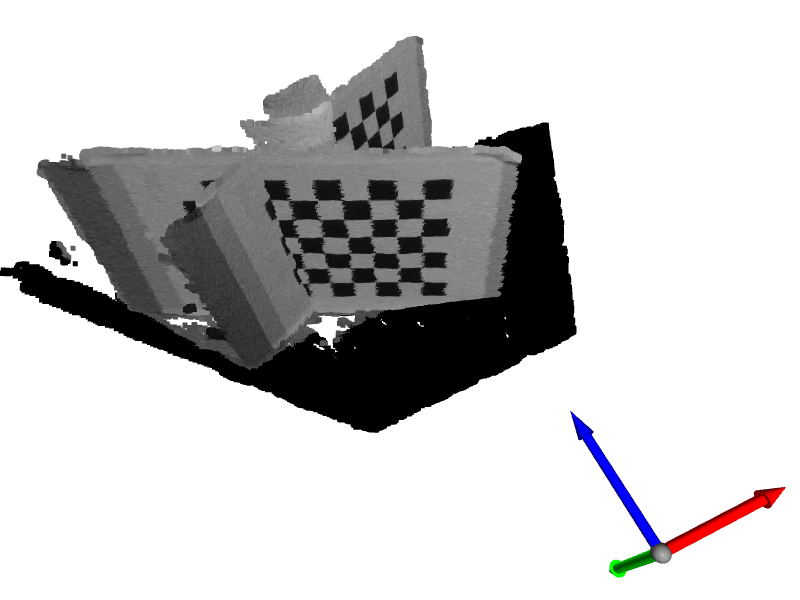
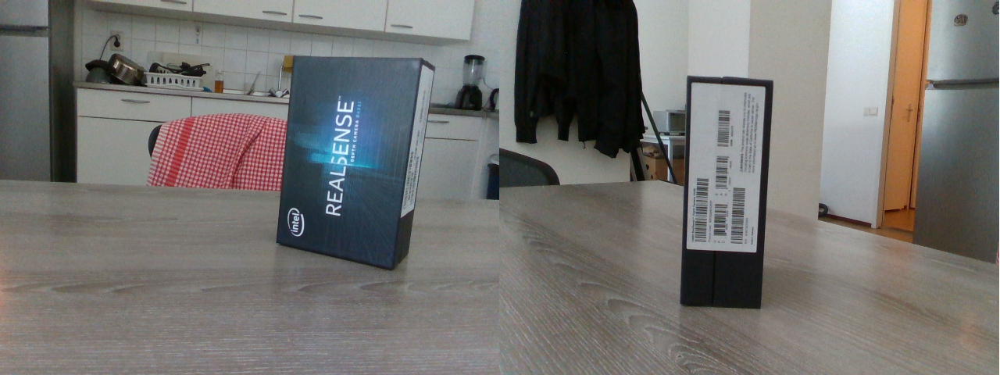

4DFS UPDATES @25.06
Roadmap

Progress Report
D435i accuracy results
Approximately one month ago (20.5), I presented my RealSense D435i accuracy measurement results. Few weeks after that, I also presented the same results on IDE3D meeting. Some conclusions I got from the feedback and reflecting back:
- good learning experience, understand theory better, handling the camera
- results not too reliable but good enough to prove the point -> camera is good enough for the task (sub 0.1 mm RMSE errors, below 1m)
after repeating the measurements, I believe we will have a good characterization of the camera
tangible conclusions were not really drawn in the first test:
- did not prove that 848x480 px is the best resolution (but I 'know'/believe it)
- optimal exposure + laser power settings are not obvious from the graphs/results
- did not determine what ROI (Region of Interest) to use - how many border pixels should we throw away due to noise?
Drawing those tangible conclusions is important for the project, since ROI (and FoV, not measured previously) + optimal distance will determine minimal number of cameras needed.
Registration
One of the most important parts of this project, is registration of multiple 3D scanned pointclouds - how to align scans from multiple cameras into a single coordinate frame?
- the problem of registration is not new, and already 'solved' -> I need to pick the best way and implement it. Note to self: do not re-invent the wheel!
- got lost in the topic, since many fields (robotics, computer vision etc.) deal with essentially the same problem in different contexts: registration, visual odometry, structure from motion, camera pose estimation, multi-cam calibration....
- learned about ICP algorithm, tried implementing it on my own scans (unsuccessfully) and on the Redwood RGBD dataset (semi-successful)
- upon discussing with prof. Wolf, I realised that ICP is not really needed at this phase of the project. Simpler, coarser alignment is needed and sufficient for now.
- after some time researching and finding myself in the topic, I finally chose my approach: use classic camera calibration techniques - use the extrinsic parameters to obtain camera positions and transformations between them
Multi-cam extrinsic calibration
Camera calibration is a process of estimating the camera parameters (pinhole camera model). Commonly a checkerboard is captured with a camera -> calibration process tells us multiple things: focal length, sensor/pixel sizes, principal points (intrinsics) as well as coordinate system transformation between the world and the camera (extrinsics). We set one of the chessboard corners as the origin of the world, with X and Y axes on the board, Z axis pointing outwards.
The idea is to:
- scan a well known calibration object (chessboard, ArUco markers, etc.) - visible by all cameras
- get extrinsic parameters for each camera (calibration process)
- calculate relative transformations between cameras (thanks Yusheng for help with maths!)
- use this in all subsequent scans, for registering the pointclouds (hard-stiching?). This way we only calibrate once, then use the transformations in all subsequent scans. Really convenient and fast.
- the question is: how accurate is this? How can we improve it?
I decided to implement a simple version of this, for the sake of learning and getting insight. Answering the accuracy question will be easier after first implementation is done.
Using OpenCV and chessboard I am able to calibrate and get relative transformation between two cameras and consequentially registering two point clouds. However, I am not sure if the results are 100% correct just yet - wondering how far can this technique bring us?

Image 1: Unaligned scan of a chessboard, from two cameras.

Image 2: aligned scan
There was a great deal of debugging so far:
- RealSense SDK multi-camera issues. However, final release of the SDK works (enough for this purpose, cameras not hw synchronised yet)
- my own misunderstandings of the 3D transformations and algorithms, etc.
During the process I also learned about aligning RGB image to depth image and vice-versa. This fixed the problem which I had - color data was not mapped correctly to the pointcloud in the beginning Shown below.


Image 3,4 : original color images from two realsense cameras. misaligned mapping between color frame and the depth frame (pointcloud)
In the future, I want to evaluate this technique (answer the accuracy question) and relate what I am doing to scientific research. One of the papers I want to look into is this: Robust Intrinsic and Extrinsic Calibration of RGB-D Cameras (2018, implementation in ROS).
What's next?
First thing that I want to achieve is better registration, by:
- fixing/optimizing my implementation w/ chessboard
- using ChArUco markers (more convenient usage, not sure about greater accuracy)
- fine-grained alignmennt using ICP or something similar
- calibrate all cameras (intrinsics), also IR/depth - now using factory intrinsics, RGB only.
I am aiming to do this in the next week. After that I want to do in parallel:
determine optimal number, settings and positions of cameras
embedded system design
- theoretical/measured USB bandwidth requirements
- PCI bus capabilities - how many USB controllers can we have on a single motherboard = how many cameras. Can we leave some PCI bandwidth reserved for GPU (parallel computing, acceleration)?
Thinking about if I should proceed with prototype design in one of two ways:
Do it the careful and smart way
- repeat the accuracy measurements first
- obtain optimal settings = optimal number of cameras = optimal positions
- only then proceed to buying/designing hardware
- PROS: seems more right, spending money will be argumented, nicer for writing the thesis CONS: might take a lot of time before reaching embedded design (feels late already) -> no time for reflecting and improving the system. Most likely this means doing it in one go, on the first try.
Just do it and pray
- start embedded stuff right after next week
- design a system that can support 6-8 cameras using 848x480 resolution (most likely used)
- measure bandwidths in practice
- select, buy and assemble the hardware asap
- PROS: learning by doing, gain experience by building prototype version 1 - use this knowledge in the second iteration, for improving it. Second time, I will 'know what I am doing'. CONS: harder to argument (not good for thesis writing), might buy some parts that are not optimal/needed, might overprovision the design....